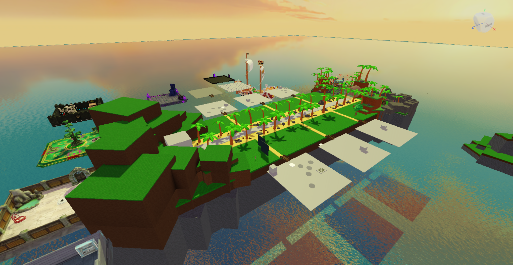
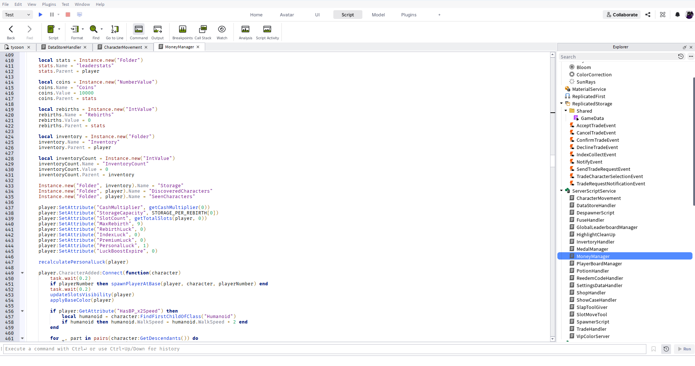
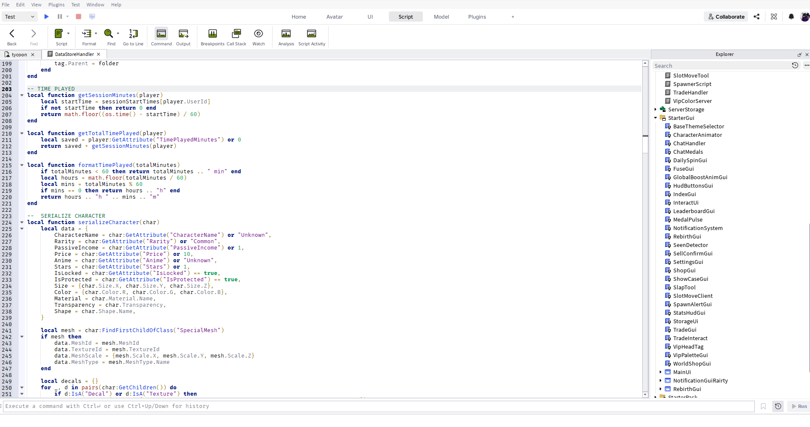
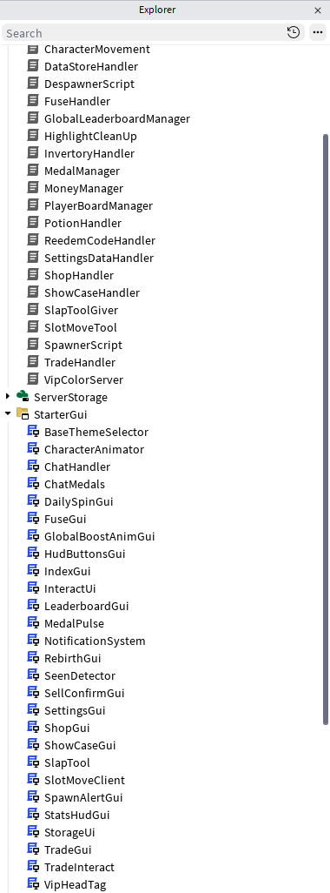
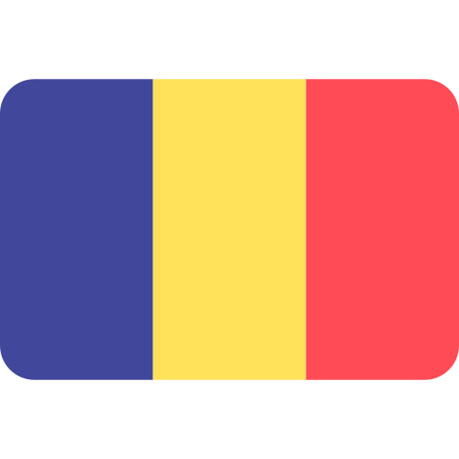
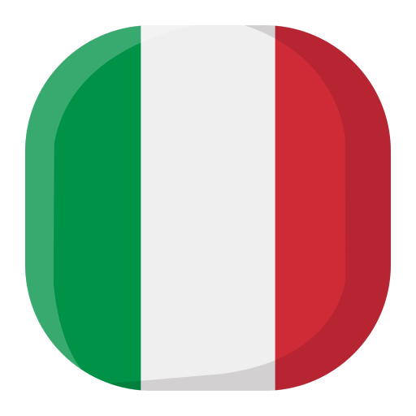

Robert-Sebastian Groza
Fachinformatiker für Anwendungsentwicklung
Über Mich
Computer und Technik begleiten mich schon seit meiner Kindheit Ich war schon früh viel am PC und wollte immer verstehen wie Systeme und Programme funktionieren
Besonders das Programmieren hat mich schnell begeistert Viele Dinge habe ich mir selbst beigebracht weil ich gerne eigene Lösungen entwickle
Gaming war immer ein großes Hobby von mir Dadurch ist meine Leidenschaft für Computer noch stärker geworden
Mein Ziel war schon lange beruflich in die IT zu gehen Deshalb habe ich mich bewusst für den Weg zum Fachinformatiker entschieden
Technische Kenntnisse
Entwicklung
Tools & Systeme
Lua Projekt
Ich habe eigenständig ein größeres Lua Projekt entwickelt Dabei entstand ein komplettes System mit über 70 Scripts
- Modulare Struktur mit über 70 Scripts
- Eigene Systeme und Datenspeicherung
- Automatisierte Mechaniken
- Sauberer Aufbau und strukturierter Code

World Design und Basesystem
Große individuelle Spielwelt mit 6 personalisierten Basen

Economy Inventory Progression
Eigenes Wirtschaftssystem mit Coins Rebirths Inventar und Fortschritt

Data Management Save Systems
Eigenes Speichersystem für Daten Fortschritt Währungen und Serverdaten

Projektstruktur und Scripts
Modular aufgebaute Scriptstruktur für Systeme UI und Datenverwaltung
Berufserfahrung
-
12 2025 bis 12 2027 WBS Training
Umschulung zum Fachinformatiker für Anwendungsentwicklung -
04 2020 bis 04 2025 Mercato Italiano Kiel
Catering und Veranstaltungsmanager Planung Organisation Teamkoordination -
2018 bis 2020 Veranstaltungstechnik Kappeln
Technischer Support Windows Systeme Hardware Wartung
Sprachen
-
 Deutsch Verhandlungssicher
Deutsch Verhandlungssicher
-
 Englisch Verhandlungssicher
Englisch Verhandlungssicher
-

Rumänisch Muttersprache -

Italienisch Sehr Gute Kenntnisse